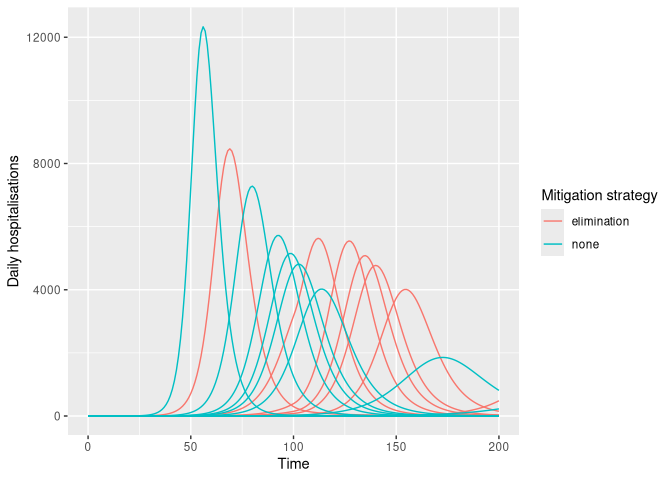

daedalus.compare is a helper package that wraps the daedalus package for epi-macroeconomic modelling, and is primarily focused on making it easy to run multiple scenarios of pandemic mitigation strategies along with uncertainty in infection parameters.
Installation
You can install the development version of daedalus.compare from the Jameel Institute R-universe (recommended) or from GitHub.
# installation from R-universe
install.packages(
"daedalus.compare",
repos = c(
"https://jameel-institute.r-universe.dev", "https://cloud.r-project.org"
)
)
# installation from GitHub using {pak}
install.packages("pak")
pak::pak("jameel-institute/daedalus.compare")You can also install
Quick start
This example shows how to model multiple pandemic response scenarios in the U.K. with uncertainty in \(R_0\) of an H1N1-like infection. Note that daedalus.compare only supports running daedalus::daedalus_multi_infection() using daedalus.compare::run_scenarios() at present.
library(daedalus)
library(daedalus.compare)
# make list of infection objects with R0 of 1.0 -- 2.0 with skewed distribution
set.seed(1) # for reproducible results
infection_list <- make_infection_samples(
"influenza_2009",
param_distributions = list(
r0 = distributional::dist_beta(2, 5)
),
param_ranges = list(
r0 = c(1.0, 2.0)
),
samples = 10
)
elimination <- daedalus_timed_npi(
start_time = 10,
end_time = 100,
openness = list(
daedalus.data::closure_strategy_data[["elimination"]]
), # must be a list
"GBR" # must specify country
)
# run multiple scenarios of outputs
output <- run_scenarios(
"GBR", infection_list,
response = list(
none = NULL,
elimination = elimination
),
time_end = 200
)
# view output which is a data.table
output
#> response time_end output
#> <char> <num> <list>
#> 1: none 200 <list[10]>
#> 2: elimination 200 <list[10]>
# get epi-curve data
disease_tags <- sprintf("sample_%i", seq_along(infection_list))
epi_curves <- get_epicurve_data(output, disease_tags)
# plot epi-curve data showing daily hospitalisations
library(dplyr)
#>
#> Attaching package: 'dplyr'
#> The following objects are masked from 'package:stats':
#>
#> filter, lag
#> The following objects are masked from 'package:base':
#>
#> intersect, setdiff, setequal, union
library(ggplot2)
epi_curves %>%
filter(measure == "daily_hospitalisations") %>%
ggplot(aes(time, value)) +
geom_line(
aes(col = response, group = interaction(tag, response))
) +
labs(
x = "Time", y = "Daily hospitalisations",
col = "Mitigation strategy"
)
Related projects
daedalus.compare is intended to be a helper package for the macro-economic and epidemiological modelling package daedalus, also developed at the Jameel Institute.
The DAEDALUS model was originally developed in Haw et al. (2022), and the R implementation of the model is based on a project on the economics of pandemic preparedness.